import pandas as pd
import numpy as np
import os
from pathlib import Path
import matplotlib.pyplot as plt
import datetime as dt
# Załadowanie danych z katalogu data/raw/cosmetics
for base_path in [Path.cwd(), *Path.cwd().parents]:
data_directory = base_path / 'data' / 'raw' / 'cosmetics'
if data_directory.exists():
break
else:
raise FileNotFoundError("Expected cosmetics CSV files in data/raw/cosmetics")
data_files = sorted(data_directory.glob('*.csv'))
data = pd.concat([pd.read_csv(file_path) for file_path in data_files])
data['event_time'] = data['event_time'].str.replace(' UTC', '')
data['event_time'] = pd.to_datetime(data['event_time'], format="%Y-%m-%d %H:%M:%S", utc=True)Notatnik analityczny
Recreated from eCommerce Analysis_testy.ipynb
Kaggle - zbiór danych eCommerce
zbiór danych: kaggle.com/datasets/PromptCloudHQ/ecommerce-data
Przeprocesowanie danych
data| event_time | event_type | product_id | category_id | category_code | brand | price | user_id | user_session | |
|---|---|---|---|---|---|---|---|---|---|
| 0 | 2019-12-01 00:00:00+00:00 | remove_from_cart | 5712790 | 1487580005268456287 | NaN | f.o.x | 6.27 | 576802932 | 51d85cb0-897f-48d2-918b-ad63965c12dc |
| 1 | 2019-12-01 00:00:00+00:00 | view | 5764655 | 1487580005411062629 | NaN | cnd | 29.05 | 412120092 | 8adff31e-2051-4894-9758-224bfa8aec18 |
| 2 | 2019-12-01 00:00:02+00:00 | cart | 4958 | 1487580009471148064 | NaN | runail | 1.19 | 494077766 | c99a50e8-2fac-4c4d-89ec-41c05f114554 |
| 3 | 2019-12-01 00:00:05+00:00 | view | 5848413 | 1487580007675986893 | NaN | freedecor | 0.79 | 348405118 | 722ffea5-73c0-4924-8e8f-371ff8031af4 |
| 4 | 2019-12-01 00:00:07+00:00 | view | 5824148 | 1487580005511725929 | NaN | NaN | 5.56 | 576005683 | 28172809-7e4a-45ce-bab0-5efa90117cd5 |
| ... | ... | ... | ... | ... | ... | ... | ... | ... | ... |
| 4264747 | 2020-01-31 23:59:52+00:00 | remove_from_cart | 5886774 | 1487580006317032337 | NaN | NaN | 1.59 | 607092857 | a4ccd1c4-a9d2-48d0-9816-082ec5bb5e47 |
| 4264748 | 2020-01-31 23:59:52+00:00 | remove_from_cart | 5886774 | 1487580006317032337 | NaN | NaN | 1.59 | 607092857 | a4ccd1c4-a9d2-48d0-9816-082ec5bb5e47 |
| 4264749 | 2020-01-31 23:59:53+00:00 | view | 5875432 | 2084144451428549153 | NaN | NaN | 2.05 | 423651741 | fb42a963-abef-4c4f-b1ba-f5812dd54e80 |
| 4264750 | 2020-01-31 23:59:57+00:00 | remove_from_cart | 5820745 | 1487580006317032337 | NaN | NaN | 2.22 | 607092857 | a4ccd1c4-a9d2-48d0-9816-082ec5bb5e47 |
| 4264751 | 2020-01-31 23:59:58+00:00 | remove_from_cart | 5820745 | 1487580006317032337 | NaN | NaN | 2.22 | 607092857 | a4ccd1c4-a9d2-48d0-9816-082ec5bb5e47 |
20692840 rows × 9 columns
Eksploracja danych
Kluczowe wnioski:
- Dystrybucja cen ma długi ogon, może wymagać normalizacji log()
- Kategoria Code ma zbyt wiele brakujących wartości, powinna być wykluczona z modeli, ale zachowana do interpretacji (np. Analiza koszykowa)
- Brak wyraźnie dominujących marek
- Nie było potrzeby sprawdzania współliniowości, ponieważ cena jest jedyną zmienną numeryczną.
- Liczba unikalnych wartości sesji jest znacznie mniejsza niż liczba wszystkich wartości, co oznacza, że klient wykonuje wiele czynności w jednej sesji
# Sprawdzenie brakujących wartości (jako procent wszystkich wartości)
missing = data.isnull().sum()
missing = missing[missing > 0]
missing = missing.apply(lambda x: x / data.shape[0] * 100).sort_values(ascending=False)
missing.plot(kind='bar')
plt.title('Brakujące wartości jako procent wszystkich wartości')
plt.xlabel('Kolumny')
plt.ylabel('Procent')
plt.show()
# Sprawdzenie liczby unikalnych wartości
data.nunique().plot(kind='bar')
plt.title('Liczba unikalnych wartości w każdej kolumnie')
plt.xlabel('Kolumny')
plt.ylabel('Liczba Unikalnych Wartości')
plt.show()
# Sprawdzenie rozkładów
data['price'].plot(kind='hist', bins=100)
plt.title('Dystrybucja cen')
plt.xlabel('Cena')
plt.ylabel('Częstotliwość')
plt.show()
# Eliminacja ujemnych wartości w kolumnie 'price'
data = data[data['price'] >= 0]
def plot_datetime_distribution(data):
fig, axs = plt.subplots(3, 1, figsize=(9, 15))
# Wykres rozkładu typów zdarzeń w czasie (według daty)
data.groupby(data['event_time'].dt.date)['event_type'].value_counts().unstack().plot(kind='line', ax=axs[2])
axs[2].set_title('Rozkład typów zdarzeń w czasie (według daty)')
axs[2].set_xlabel('Data')
axs[2].set_ylabel('Częstotliwość')
# Wykres rozkładu typów zdarzeń w czasie (według godziny)
data.groupby(data['event_time'].dt.hour)['event_type'].value_counts().unstack().plot(kind='line', ax=axs[0])
axs[0].set_title('Wykres rozkładu typów zdarzeń w czasie (według godziny)')
axs[0].set_xlabel('Godzina')
axs[0].set_ylabel('Częstotliwość')
# Wykres rozkładu typów zdarzeń w czasie (według dnia tygodnia)
data.groupby(data['event_time'].dt.weekday)['event_type'].value_counts().unstack().plot(kind='line', ax=axs[1])
axs[1].set_title('Wykres rozkładu typów zdarzeń w czasie (według dnia tygodnia)')
axs[1].set_xlabel('Dzień tygodnia')
axs[1].set_ylabel('Częstotliwość')
plt.tight_layout()
plt.show()
plot_datetime_distribution(data)
fig, axs = plt.subplots(1, 3, figsize=(15, 5))
# Wykres rozkładu typów zdarzeń
data['event_type'].value_counts().plot(kind='pie', ax=axs[0])
axs[0].set_title('Rozkład typów zdarzeń')
# Wykres rozkładu marek
data['brand'].value_counts().plot(kind='pie', ax=axs[1])
axs[1].set_title('Rozkład marek')
# Wykres rozkładu ID kategorii
data['category_id'].value_counts().plot(kind='pie', ax=axs[2], labels=None)
axs[2].set_title('Rozkład ID kategorii')
plt.tight_layout()
plt.show()
fig, axes = plt.subplots(3, 1, figsize=(9, 15))
# Wykres rozkładu czasu zdarzeń (godzinowy)
hourly_sum = data.groupby(data['event_time'].dt.hour)['event_time'].count()
axes[0].set_title('Wykres rozkładu czasu zdarzeń (godzinowy)')
hourly_sum.plot(kind='bar', ax=axes[0])
axes[0].set_xlabel('Godzina')
axes[0].set_ylabel('Częstotliwość')
# Wykres rozkładu czasu zdarzeń (dzienny)
daily_sum = data.resample('D', on='event_time').count()
axes[2].set_title('Wykres rozkładu czasu zdarzeń (dzienny)')
daily_sum['event_type'].plot(ax=axes[2])
axes[2].set_xlabel('')
axes[2].set_ylabel('Częstotliwość')
# Wykres rozkładu czasu zdarzeń (dniowy)
weekday_sum = data.groupby(data['event_time'].dt.weekday)['event_time'].count()
weekday_labels = ['Pon', 'Wto', 'Śro', 'Czw', 'Pią', 'Sob', 'Nie']
axes[1].set_title('Wykres rozkładu czasu zdarzeń (dniowy)')
weekday_sum.plot(kind='bar', ax=axes[1])
axes[1].set_xlabel('')
axes[1].set_ylabel('Częstotliwość')
axes[1].set_xticklabels(weekday_labels)
plt.show()
# del weekday_labels, weekday_sum, daily_sum, hourly_sum, fig, axes, missing # zmienne do usunięcia z pamięci
purchase_data = data[data['event_type'] == 'purchase']
cart_data = data[data['event_type'] == 'cart']
view_data = data[data['event_type'] == 'view']
remove_data = data[data['event_type'] == 'remove_from_cart']
purchase_data_date = purchase_data.groupby(purchase_data['event_time'].dt.date)['event_type'].count()
cart_data_date = cart_data.groupby(cart_data['event_time'].dt.date)['event_type'].count()
view_data_date = view_data.groupby(view_data['event_time'].dt.date)['event_type'].count()
remove_data_date = remove_data.groupby(remove_data['event_time'].dt.date)['event_type'].count()
# Obliczanie współczynnika konwersji koszyka do zakupu według daty
cart_to_purchase_rate = purchase_data_date / cart_data_date
# Obliczanie współczynnika konwersji widoku do zakupu według daty
view_to_purchase_rate = purchase_data_date / view_data_date
# Obliczanie współczynnika konwersji koszyka do usunięcia (opuszczenia) według daty
cart_to_remove_rate = remove_data_date / cart_data_date
purchase_data_hourly = purchase_data.groupby(purchase_data['event_time'].dt.hour)['event_type'].count()
cart_data_hourly = cart_data.groupby(cart_data['event_time'].dt.hour)['event_type'].count()
view_data_hourly = view_data.groupby(view_data['event_time'].dt.hour)['event_type'].count()
remove_data_hourly = remove_data.groupby(remove_data['event_time'].dt.hour)['event_type'].count()
# Obliczanie współczynnika konwersji koszyka do zakupu według godziny
cart_to_purchase_rate_hourly = purchase_data_hourly / cart_data_hourly
# Obliczanie współczynnika konwersji widoku do zakupu według godziny
view_to_purchase_rate_hourly = purchase_data_hourly / view_data_hourly
# Obliczanie współczynnika konwersji koszyka do usunięcia (opuszczenia) według godziny
cart_to_remove_rate_hourly = remove_data_hourly / cart_data_hourly
# Stwórz wykres w jednej linii z dwiema kolumnami dla podwykresów
fig, axs = plt.subplots(1, 2, figsize=(15, 5))
# Wykres współczynnik konwersji koszyka do zakupu według daty
cart_to_purchase_rate.plot(kind='line', ax=axs[0], legend=True, label='Koszyk do zakupu')
view_to_purchase_rate.plot(kind='line', ax=axs[0], legend=True, label='Widok do zakupu')
cart_to_remove_rate.plot(kind='line', ax=axs[0], legend=True, label='porzucenie')
axs[0].set_title('Współczynnik konwersji (wg daty)')
axs[0].set_xlabel('Data')
axs[0].set_ylabel('Współczynnik konwersji')
# Wykres współczynnik konwersji koszyka do zakupu według godziny
cart_to_purchase_rate_hourly.plot(kind='line', ax=axs[1], legend=True, label='Koszyk do Zakupu')
view_to_purchase_rate_hourly.plot(kind='line', ax=axs[1], legend=True, label='Widok do Zakupu')
cart_to_remove_rate_hourly.plot(kind='line', ax=axs[1], legend=True, label='Porzucenie')
axs[1].set_title('Współczynnik Konwersji (wg Godziny)')
axs[1].set_xlabel('Godzina')
axs[1].set_ylabel('Współczynnik Konwersji')
plt.tight_layout()
plt.show()
del cart_to_purchase_rate, view_to_purchase_rate, cart_to_remove_rate, cart_to_purchase_rate_hourly, view_to_purchase_rate_hourly, cart_to_remove_rate_hourly, purchase_data, cart_data, view_data, remove_data, purchase_data_date, cart_data_date, view_data_date, remove_data_date, purchase_data_hourly, cart_data_hourly, view_data_hourly, remove_data_hourly # zwolnienie pamięci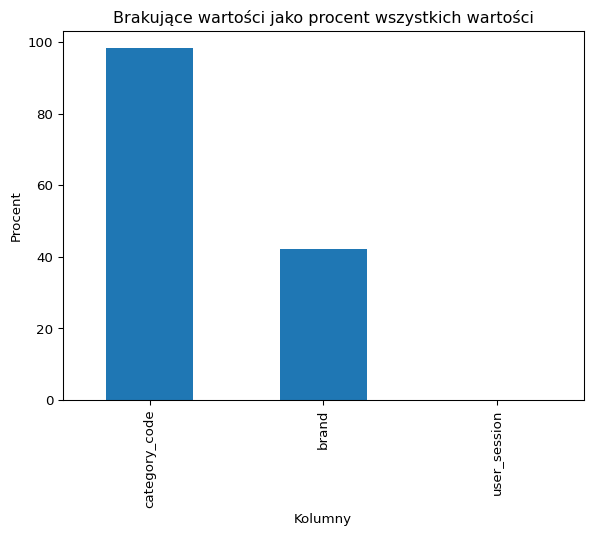
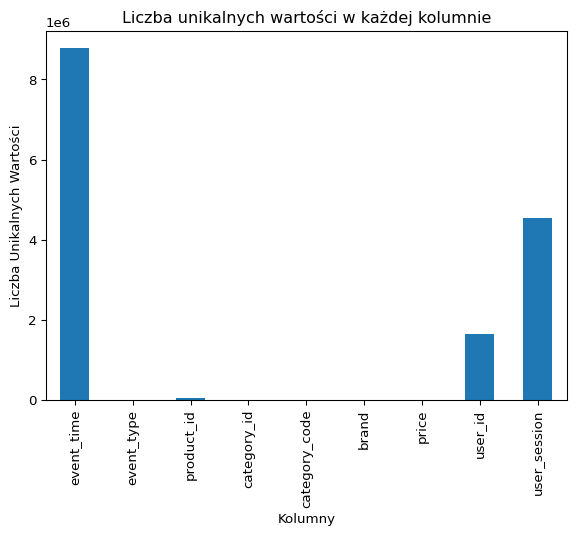
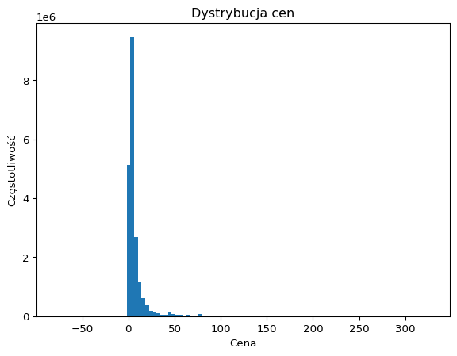
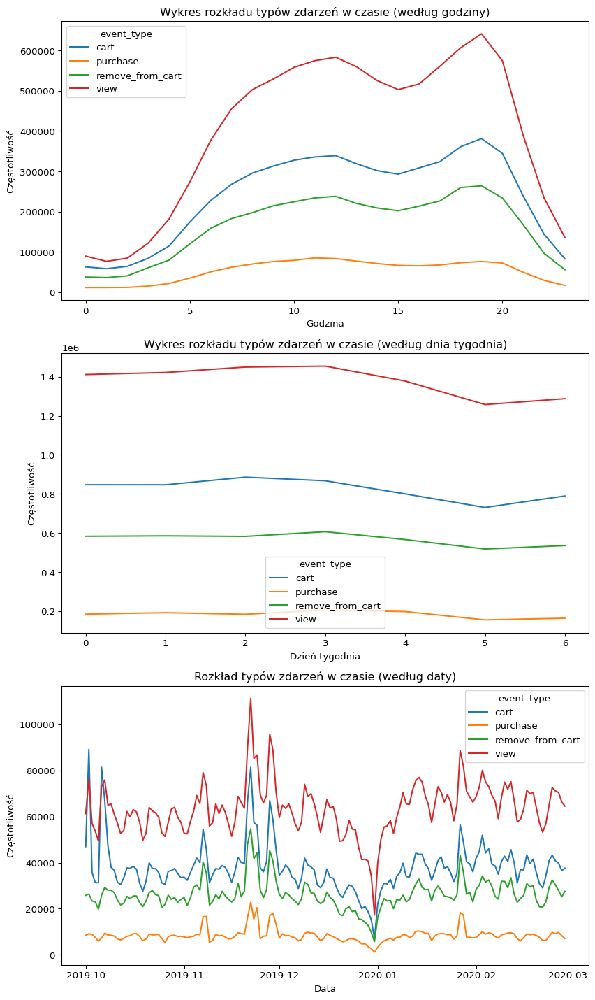
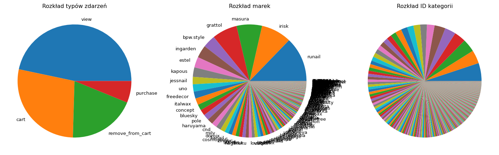
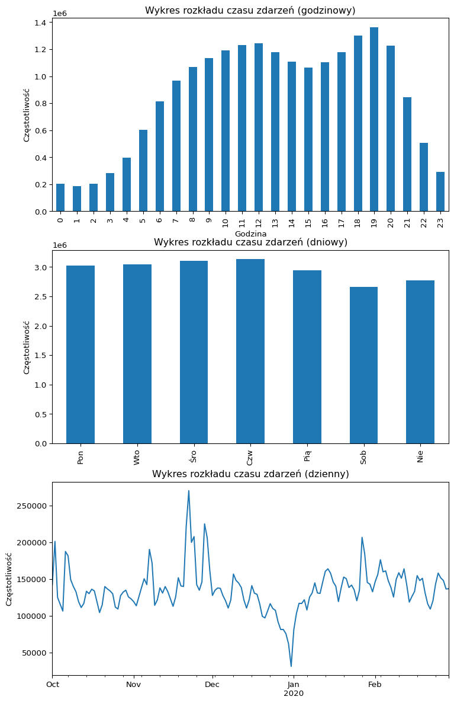
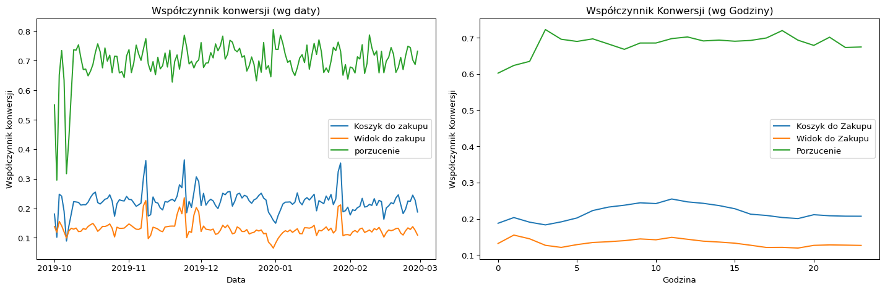
data| event_time | event_type | product_id | category_id | category_code | brand | price | user_id | user_session | |
|---|---|---|---|---|---|---|---|---|---|
| 0 | 2019-12-01 00:00:00+00:00 | remove_from_cart | 5712790 | 1487580005268456287 | NaN | f.o.x | 6.27 | 576802932 | 51d85cb0-897f-48d2-918b-ad63965c12dc |
| 1 | 2019-12-01 00:00:00+00:00 | view | 5764655 | 1487580005411062629 | NaN | cnd | 29.05 | 412120092 | 8adff31e-2051-4894-9758-224bfa8aec18 |
| 2 | 2019-12-01 00:00:02+00:00 | cart | 4958 | 1487580009471148064 | NaN | runail | 1.19 | 494077766 | c99a50e8-2fac-4c4d-89ec-41c05f114554 |
| 3 | 2019-12-01 00:00:05+00:00 | view | 5848413 | 1487580007675986893 | NaN | freedecor | 0.79 | 348405118 | 722ffea5-73c0-4924-8e8f-371ff8031af4 |
| 4 | 2019-12-01 00:00:07+00:00 | view | 5824148 | 1487580005511725929 | NaN | NaN | 5.56 | 576005683 | 28172809-7e4a-45ce-bab0-5efa90117cd5 |
| ... | ... | ... | ... | ... | ... | ... | ... | ... | ... |
| 4264747 | 2020-01-31 23:59:52+00:00 | remove_from_cart | 5886774 | 1487580006317032337 | NaN | NaN | 1.59 | 607092857 | a4ccd1c4-a9d2-48d0-9816-082ec5bb5e47 |
| 4264748 | 2020-01-31 23:59:52+00:00 | remove_from_cart | 5886774 | 1487580006317032337 | NaN | NaN | 1.59 | 607092857 | a4ccd1c4-a9d2-48d0-9816-082ec5bb5e47 |
| 4264749 | 2020-01-31 23:59:53+00:00 | view | 5875432 | 2084144451428549153 | NaN | NaN | 2.05 | 423651741 | fb42a963-abef-4c4f-b1ba-f5812dd54e80 |
| 4264750 | 2020-01-31 23:59:57+00:00 | remove_from_cart | 5820745 | 1487580006317032337 | NaN | NaN | 2.22 | 607092857 | a4ccd1c4-a9d2-48d0-9816-082ec5bb5e47 |
| 4264751 | 2020-01-31 23:59:58+00:00 | remove_from_cart | 5820745 | 1487580006317032337 | NaN | NaN | 2.22 | 607092857 | a4ccd1c4-a9d2-48d0-9816-082ec5bb5e47 |
20692709 rows × 9 columns
Inżynieria cech
# Usunięcie wierszy z ujemnymi wartościami w kolumnie 'price'
data = data[data['price'] >= 0]
# Konwersja daty i godziny do współrzędnych biegunowych
data['event_time_polar'] = (data['event_time'].dt.hour + data['event_time'].dt.minute / 60) * 2 * np.pi / 24
# Tworzenie nowej cechy: liczba działań w jednej sesji
data['actions_per_session'] = data.groupby('user_session')['user_session'].transform('count')
data.reset_index(drop=True, inplace=True)
# Grupowanie danych po 'user_id' i 'user_session', a następnie obliczanie liczby działań w każdej sesji
session_actions = data.groupby(['user_id', 'user_session']).size().reset_index(name='session_actions')
# Grupowanie danych po 'user_id' i obliczanie średniej liczby działań w każdej sesji
mean_session_actions = session_actions.groupby('user_id')['session_actions'].mean()
data['user_avg_actions_per_session'] = data['user_id'].map(mean_session_actions).fillna(0)
del session_actions, mean_session_actions
# Utworzenie cechy określającej łączną liczbę zdarzeń dla każdego użytkownika
data['user_total_actions'] = data.groupby('user_id')['user_id'].transform('count')data| event_time | event_type | product_id | category_id | category_code | brand | price | user_id | user_session | event_time_polar | actions_per_session | user_avg_actions_per_session | user_total_actions | |
|---|---|---|---|---|---|---|---|---|---|---|---|---|---|
| 0 | 2019-12-01 00:00:00+00:00 | remove_from_cart | 5712790 | 1487580005268456287 | NaN | f.o.x | 6.27 | 576802932 | 51d85cb0-897f-48d2-918b-ad63965c12dc | 0.000000 | 466.0 | 2.925676 | 1299 |
| 1 | 2019-12-01 00:00:00+00:00 | view | 5764655 | 1487580005411062629 | NaN | cnd | 29.05 | 412120092 | 8adff31e-2051-4894-9758-224bfa8aec18 | 0.000000 | 41.0 | 3.518519 | 95 |
| 2 | 2019-12-01 00:00:02+00:00 | cart | 4958 | 1487580009471148064 | NaN | runail | 1.19 | 494077766 | c99a50e8-2fac-4c4d-89ec-41c05f114554 | 0.000000 | 99.0 | 64.000000 | 128 |
| 3 | 2019-12-01 00:00:05+00:00 | view | 5848413 | 1487580007675986893 | NaN | freedecor | 0.79 | 348405118 | 722ffea5-73c0-4924-8e8f-371ff8031af4 | 0.000000 | 44.0 | 17.000000 | 85 |
| 4 | 2019-12-01 00:00:07+00:00 | view | 5824148 | 1487580005511725929 | NaN | NaN | 5.56 | 576005683 | 28172809-7e4a-45ce-bab0-5efa90117cd5 | 0.000000 | 18.0 | 3.210526 | 61 |
| ... | ... | ... | ... | ... | ... | ... | ... | ... | ... | ... | ... | ... | ... |
| 20692704 | 2020-01-31 23:59:52+00:00 | remove_from_cart | 5886774 | 1487580006317032337 | NaN | NaN | 1.59 | 607092857 | a4ccd1c4-a9d2-48d0-9816-082ec5bb5e47 | 6.278822 | 10.0 | 7.545455 | 83 |
| 20692705 | 2020-01-31 23:59:52+00:00 | remove_from_cart | 5886774 | 1487580006317032337 | NaN | NaN | 1.59 | 607092857 | a4ccd1c4-a9d2-48d0-9816-082ec5bb5e47 | 6.278822 | 10.0 | 7.545455 | 83 |
| 20692706 | 2020-01-31 23:59:53+00:00 | view | 5875432 | 2084144451428549153 | NaN | NaN | 2.05 | 423651741 | fb42a963-abef-4c4f-b1ba-f5812dd54e80 | 6.278822 | 18.0 | 10.428571 | 146 |
| 20692707 | 2020-01-31 23:59:57+00:00 | remove_from_cart | 5820745 | 1487580006317032337 | NaN | NaN | 2.22 | 607092857 | a4ccd1c4-a9d2-48d0-9816-082ec5bb5e47 | 6.278822 | 10.0 | 7.545455 | 83 |
| 20692708 | 2020-01-31 23:59:58+00:00 | remove_from_cart | 5820745 | 1487580006317032337 | NaN | NaN | 2.22 | 607092857 | a4ccd1c4-a9d2-48d0-9816-082ec5bb5e47 | 6.278822 | 10.0 | 7.545455 | 83 |
20692709 rows × 13 columns
Analiza RFM
from sklearn.cluster import KMeans
import pandas as pd
import matplotlib.pyplot as plt
from mpl_toolkits.mplot3d import Axes3D
from sklearn.preprocessing import StandardScaler
from collections import OrderedDict
# Obliczanie wskaźników aktualności, częstotliwości i wartości zakupów
latest_date = data['event_time'].max()
rfm_df = data[data['event_type'] == 'purchase'].groupby('user_id').agg({
'event_time': lambda date: (latest_date - date.max()).seconds,
'product_id': 'count',
'price': 'sum'
}).reset_index()
# Przed normalizacją logarytmiczną
plt.figure(figsize=(15, 10))
rfm_df.columns = ['user_id', 'Recency', 'Frequency', 'Monetary']
# Wykres histogramów przed normalizacją
plt.subplot(2, 3, 1)
rfm_df['Recency'].hist()
plt.title('Retencja (przed normalizacją)')
plt.subplot(2, 3, 2)
rfm_df['Frequency'].hist()
plt.title('Częstotliwość (przed normalizacją)')
plt.subplot(2, 3, 3)
rfm_df['Monetary'].hist()
plt.title('Wartość (przed normalizacją)')
# Po normalizacji logarytmicznej
log_transform_columns = ['Frequency', 'Monetary']
rfm_df[log_transform_columns] = np.log1p(rfm_df[log_transform_columns])
# Wykres histogramów po normalizacji
plt.subplot(2, 3, 4)
rfm_df['Recency'].hist()
plt.title('Retencja (po normalizacji)')
plt.subplot(2, 3, 5)
rfm_df['Frequency'].hist()
plt.title('Częstotliwość (po normalizacji)')
plt.subplot(2, 3, 6)
rfm_df['Monetary'].hist()
plt.title('Wartość (po normalizacji)')
plt.tight_layout()
plt.show()
# Standaryzacja metryk RFM przy użyciu StandardScaler
scaler = StandardScaler()
rfm_normalized = scaler.fit_transform(rfm_df[['Recency', 'Frequency', 'Monetary']])
# Konwersja znormalizowanych danych do DataFrame
rfm_normalized = pd.DataFrame(rfm_normalized, columns=['Recency', 'Frequency', 'Monetary'])
# Zdefiniuj funkcję do znalezienia optymalnej liczby klastrów
def find_Optimal_n_clusters(k_means_data, n_clusters=10):
DistanceList = []
for i in range(1, n_clusters + 1): # Test podziału danych na 1 do 10 klastrów
KM = KMeans(n_clusters=i, n_init='auto', random_state=1)
KM.fit(k_means_data)
DistanceList.append(KM.inertia_) # Zachowaj sumę kwadratów odległości próbek do ich najbliższego centrum klastra
plt.plot(range(1, 11), DistanceList)
plt.show()
find_Optimal_n_clusters(rfm_normalized, 10)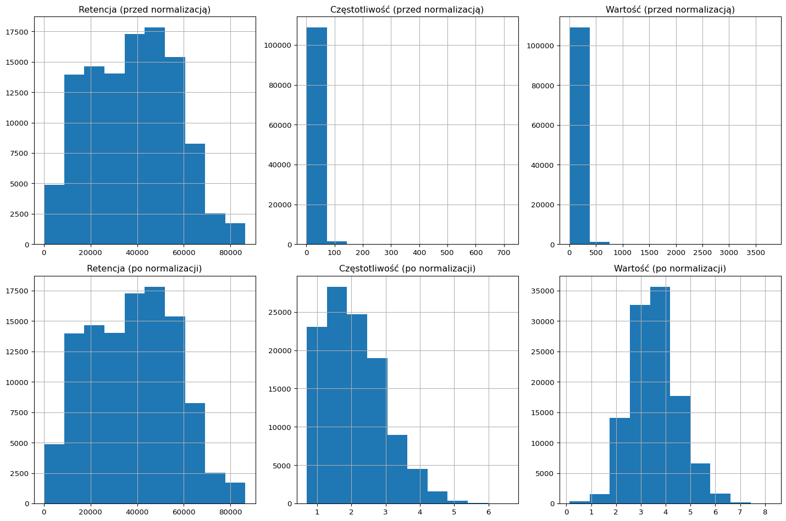
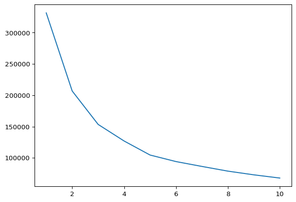
rfm_df| user_id | Recency | Frequency | Monetary | |
|---|---|---|---|---|
| 0 | 9794320 | 67966 | 1.609438 | 2.615935 |
| 1 | 10079204 | 47789 | 1.098612 | 3.288775 |
| 2 | 10280338 | 31108 | 4.465908 | 5.186436 |
| 3 | 12055855 | 42870 | 1.609438 | 2.864484 |
| 4 | 12936739 | 58120 | 1.098612 | 3.430433 |
| ... | ... | ... | ... | ... |
| 110513 | 622065819 | 5440 | 1.609438 | 3.067122 |
| 110514 | 622066161 | 7537 | 1.609438 | 2.635480 |
| 110515 | 622067983 | 5182 | 2.397895 | 4.211831 |
| 110516 | 622069477 | 6869 | 0.693147 | 0.667829 |
| 110517 | 622073202 | 6351 | 0.693147 | 1.570697 |
110518 rows × 4 columns
KM = KMeans(n_clusters=5, n_init='auto', random_state=1)
KM.fit(rfm_normalized)
def find_k_means_scatter_plot(df, model, feature_subset=None):
if feature_subset is None:
feature_subset = df.columns
n_features = len(feature_subset)
fig, axs = plt.subplots(n_features - 1, n_features - 1, figsize=(15, 15))
labels = model.labels_
for i in range(n_features - 1):
for j in range(i + 1, n_features):
ax = axs[i, j - 1] # Dostosowanie pozycji podwykresu
ax.scatter(df[feature_subset[i]], df[feature_subset[j]], c=labels, cmap='viridis', alpha=0.5)
ax.set_xlabel(feature_subset[i])
ax.set_ylabel(feature_subset[j])
plt.tight_layout()
plt.show()
# find_k_means_scatter_plot(k_means_data, KM, feature_subset=['avg_purchase_price', 'user_total_actions', 'user_total_session', 'user_avg_actions_per_session'])
def k_means_scatter_plot(x, y, df, model):
plt.scatter(df[x], df[y], c=model.labels_, cmap='viridis')
plt.xlabel(x)
plt.ylabel(y)
plt.show()
def k_means_scatter_plot_3d(x, y, z, df, model):
fig = plt.figure(figsize=(8, 6))
ax = fig.add_subplot(111, projection='3d')
ax.scatter(df[x], df[y], df[z], c=model.labels_, cmap='viridis', alpha=0.5)
ax.set_xlabel(x)
ax.set_ylabel(y)
ax.set_zlabel(z)
plt.show()
k_means_scatter_plot_3d('Recency', 'Frequency', 'Monetary', rfm_normalized, KM)
k_means_scatter_plot('Recency', 'Frequency', rfm_normalized, KM)
k_means_scatter_plot('Recency', 'Monetary', rfm_normalized, KM)
k_means_scatter_plot('Frequency', 'Monetary', rfm_normalized, KM)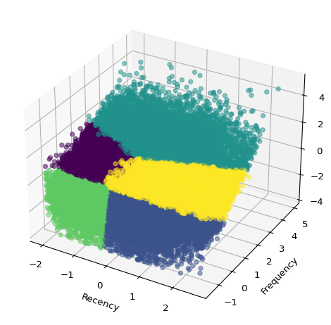
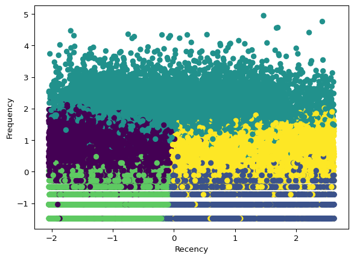
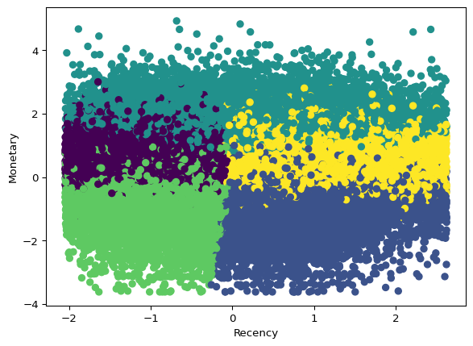
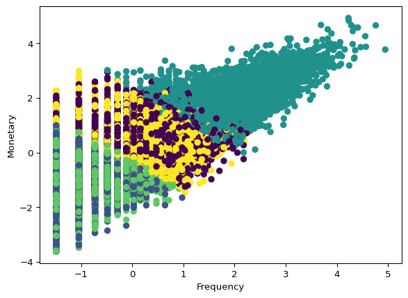
import pandas as pd
cluster_counts = (
pd.Series(KM.labels_, name="cluster")
.value_counts()
.sort_index()
.rename_axis("cluster")
.reset_index(name="users")
)
cluster_counts["share_%"] = (
cluster_counts["users"] / cluster_counts["users"].sum() * 100
).round(2)
cluster_counts| cluster | users | share_% | |
|---|---|---|---|
| 0 | 0 | 21531 | 19.48 |
| 1 | 1 | 26559 | 24.03 |
| 2 | 2 | 11810 | 10.69 |
| 3 | 3 | 24967 | 22.59 |
| 4 | 4 | 25651 | 23.21 |
- Analiza po przypisaniu etykiet
# Przypisz typ klienta RFM jako etykietę dla każdego punktu danych
rfm_df['customer_type'] = KM.labels_
color_map = {0: 'Potencjalny Klient', 1: 'Utracony Klient', 2: 'VIP', 3: 'Nowy Klient', 4: 'Stary Potencjalny Klient'}
rfm_df['customer_type'] = rfm_df['customer_type'].map(color_map)
# Scalanie danych z etykietą typu klienta RFM
merged_data = pd.merge(data, rfm_df[['user_id', 'customer_type']], on='user_id', how='left')
# Grupowanie danych według typu klienta
grouped_data = merged_data.groupby('customer_type')
# Analiza danych dla każdego typu klienta
analysis_df = grouped_data.agg({'price': 'sum',
'product_id': 'count',
'user_id': 'nunique',})
def comparison_analysis(analysis_df):
# Kalkuluj procent całkowitego przychodu dla każdego typu klienta
analysis_df['revenue_per_user'] = (analysis_df['price'] / analysis_df['user_id'])
# Kalkuluj procent użytkowników dla każdego typu klienta
analysis_df['user_percentage'] = (analysis_df['user_id'] / analysis_df['user_id'].sum())
analysis_df['Average Purchases per User'] = analysis_df['product_id'] / analysis_df['user_id']
analysis_df['Average Purchase Price'] = analysis_df['price'] / analysis_df['product_id']
# Zmien nazwy kolumn dla lepszej czytelności
analysis_df.columns = ['Total Revenue', 'Total Purchases', 'Total Users',
'Average Revenue per User', 'User Percentage', 'Average Purchases per User', 'Average Purchase Price']
# Cztery podwykresy
fig, axes = plt.subplots(4, 1, figsize=(10, 17))
# Wykres średniej ceny zakupu
axes[0].bar(analysis_df.index, analysis_df['Average Purchase Price'])
axes[0].set_xlabel('')
axes[0].set_ylabel('Wartość')
axes[0].set_title('Średnia cena zakupu')
# Wykres średniego przychodu per użytkownik
axes[1].bar(analysis_df.index, analysis_df['Average Revenue per User'])
axes[1].set_xlabel('')
axes[1].set_ylabel('Wartość')
axes[1].set_title('Średni dochód per użytkownik')
# Wykres procentu użytkowników
axes[2].bar(analysis_df.index, analysis_df['User Percentage'])
axes[2].set_xlabel('')
axes[2].set_ylabel('Wartość')
axes[2].set_title('Procent użytkowników')
# Wykres średniej liczby zakupów per użytkownik
axes[3].bar(analysis_df.index, analysis_df['Average Purchases per User'])
axes[3].set_xlabel('')
axes[3].set_ylabel('Wartość')
axes[3].set_title('Średnia liczba zakupów per użytkownik')
# Dostosowanie układu i wyświetlanie wykresów
plt.tight_layout()
plt.show()
comparison_analysis(analysis_df)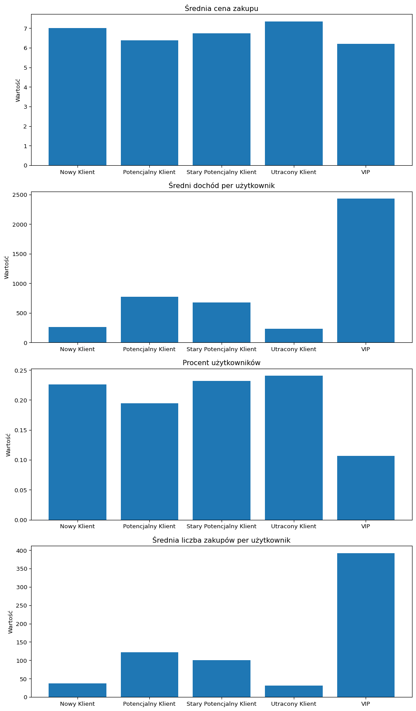
# Mapowanie customer_type do orginalnych danych
customer_types = merged_data['customer_type'].dropna().unique()
# Wykres i osie
fig, axs = plt.subplots(len(customer_types), 2, figsize=(12, 20))
# Iteracja po każdym typie klienta
for i, customer_type in enumerate(customer_types):
customer_data = merged_data[merged_data['customer_type'] == customer_type]
# print(customer_data['event_time'].dt.hour)
# Wykres rozkładu typów zdarzeń w czasie (godzina dnia)
ax = axs[i, 0]
customer_data.groupby(customer_data['event_time'].dt.hour)['event_type'].value_counts().unstack().plot(kind='line', ax=ax)
ax.set_title(f' Rozkład typów zdarzeń w czasie - {customer_type}')
ax.set_xlabel('Godzina dnia')
ax.set_ylabel('Częstotliwość')
ax.legend()
# Wykres rozkładu typów zdarzeń w czasie (dzień tygodnia)
ax = axs[i, 1]
customer_data.groupby(customer_data['event_time'].dt.weekday)['event_type'].value_counts().unstack().plot(kind='line', ax=ax)
ax.set_title(f' Rozkład typów zdarzeń w czasie - {customer_type}')
ax.set_xlabel('Dzień tygodnia')
ax.set_ylabel('Częstotliwość')
ax.legend()
# Dostosowanie układu i wyświetlanie wykresów
plt.tight_layout()
plt.show()
# Usunięcie zmiennych dla zwolnienia pamięci
del customer_types, customer_data, fig, axs, i, customer_type, color_map, merged_data, grouped_data, analysis_df, rfm_df, rfm_normalized, KM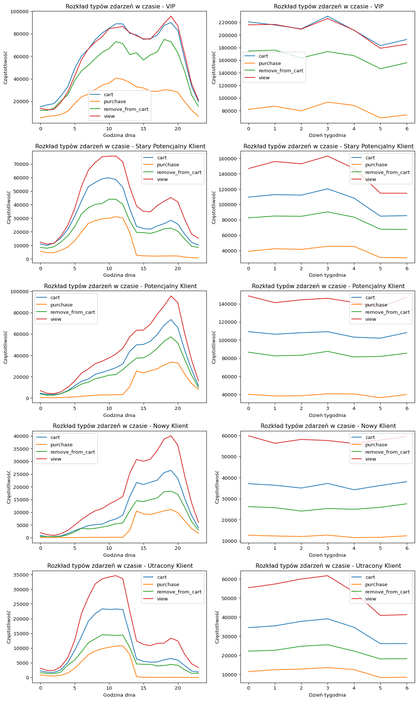
K_means segmentacja użytkowników
- Optymalizacja liczby klastrów (elbow point)
- W tym przypadku, 3 lub 4 klastry są najefektywniejszymi wyborami
k_means_data = data.groupby('user_id').agg({'user_avg_actions_per_session': 'mean',
'user_session': 'nunique',
'price': 'mean',
'user_total_actions': 'mean'}).reset_index()
k_means_data = k_means_data[['price', 'user_total_actions', 'user_session', 'user_avg_actions_per_session']]
import math
def plot_histograms(data, title):
# Liczba kolumn w DataFrame
n_cols = data.shape[1]
# Obliczenie liczby wierszy i kolumn podwykresów na podstawie liczby kolumn
n_subplot_rows = math.ceil(n_cols / 2)
n_subplot_cols = min(n_cols, 2)
# Dynamieczne stworzenie podwykresów
fig, axes = plt.subplots(n_subplot_rows, n_subplot_cols, figsize=(3 * n_subplot_cols, 3 * n_subplot_rows))
# Spłaszczenie osi, jeśli to jest pojedynczy wiersz lub pojedyncza kolumna
if n_subplot_rows == 1:
axes = axes.reshape(1, -1)
elif n_subplot_cols == 1:
axes = axes.reshape(-1, 1)
# Wykres histogramów dla każdej kolumny w DataFrame
for i, col in enumerate(data.columns):
row_idx = i // n_subplot_cols
col_idx = i % n_subplot_cols
data[col].plot(kind='hist', bins=100, ax=axes[row_idx, col_idx])
axes[row_idx, col_idx].set_title(col)
# Dostosowanie układu i wyświetlanie wykresów
fig.suptitle('{}'.format(title))
plt.tight_layout()
plt.show()
# Wywołanie funkcji z DataFrame k_means_data
k_means_data = k_means_data.rename(columns={'price': 'avg_purchase_price', 'user_session': 'user_total_session'})
plot_histograms(k_means_data, 'Dystrybucja Przed Normalizacją')
# Normalizacja danych
log_transform_columns = ['avg_purchase_price', 'user_total_actions', 'user_total_session', 'user_avg_actions_per_session']
k_means_data[log_transform_columns] = np.log1p(k_means_data[log_transform_columns])
plot_histograms(k_means_data, 'Dystrybucja Po Normalizacji')
# Usunięcie zmiennej dla zwolnienia pamięci
del log_transform_columns
# Normalizacja danych z StandardScaler
scaler = StandardScaler()
k_means_normalized = scaler.fit_transform(k_means_data)
# Znajdowanie optymalnej liczby klastrów
find_Optimal_n_clusters(k_means_data, 10)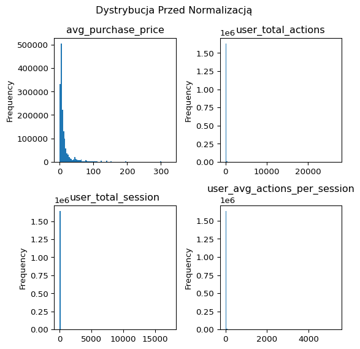
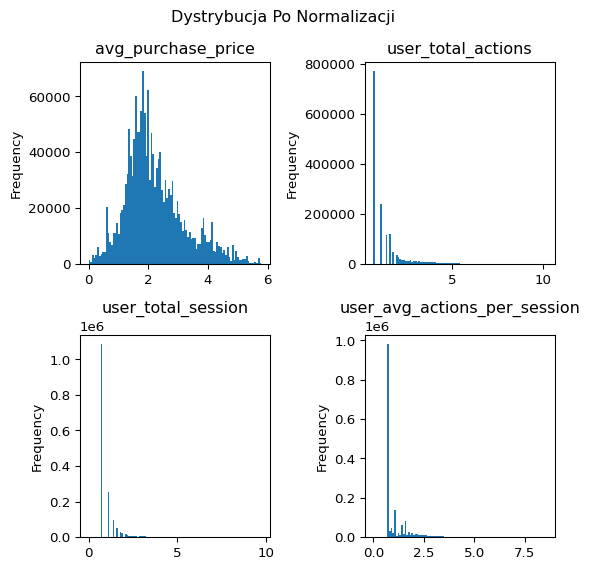
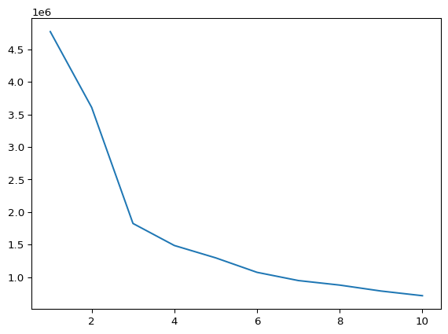
KM = KMeans(n_clusters=3, n_init='auto', random_state=1)
KM.fit(k_means_data)KMeans(n_clusters=3, random_state=1)In a Jupyter environment, please rerun this cell to show the HTML representation or trust the notebook.
On GitHub, the HTML representation is unable to render, please try loading this page with nbviewer.org.
KMeans(n_clusters=3, random_state=1)
import pandas as pd
behavior_cluster_counts = (
pd.Series(KM.labels_, name="cluster")
.value_counts()
.sort_index()
.rename_axis("cluster")
.reset_index(name="users")
)
behavior_cluster_counts["share_%"] = (
behavior_cluster_counts["users"] / behavior_cluster_counts["users"].sum() * 100
).round(2)
behavior_cluster_counts| cluster | users | share_% | |
|---|---|---|---|
| 0 | 0 | 431906 | 26.35 |
| 1 | 1 | 959844 | 58.55 |
| 2 | 2 | 247608 | 15.10 |
- Znajdowanie interpretowalnych wymiarów
- średnia cena zakupu
# ['avg_purchase_price', 'user_total_actions', 'user_total_session', 'user_avg_actions_per_session']
# k_means_scatter_plot('user_total_actions', 'avg_purchase_price', k_means_data, KM)
# k_means_scatter_plot('avg_purchase_price', 'user_total_actions', k_means_data, KM)
# k_means_scatter_plot('user_total_session', 'user_avg_actions_per_session', k_means_data, KM)
find_k_means_scatter_plot(k_means_data, KM)
k_means_scatter_plot_3d('avg_purchase_price', 'user_total_session', 'user_total_actions', k_means_data, KM)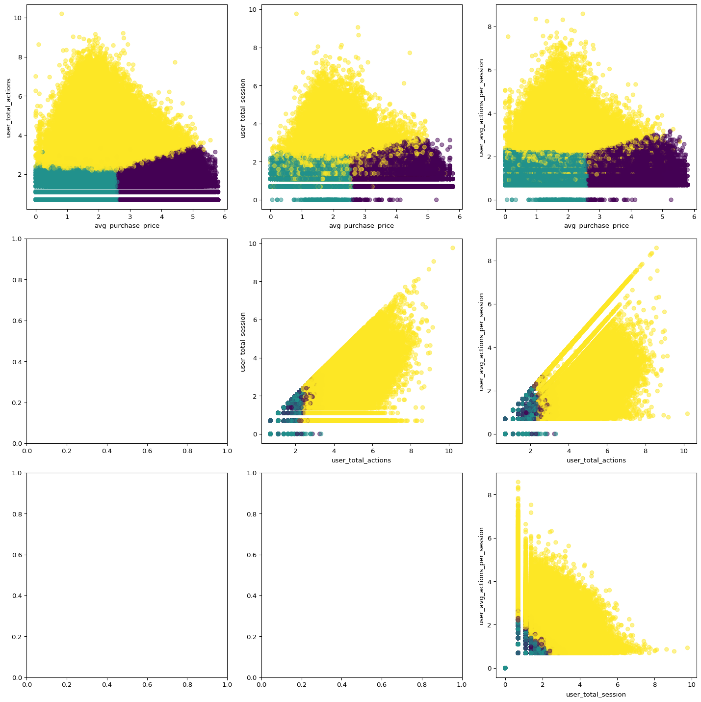
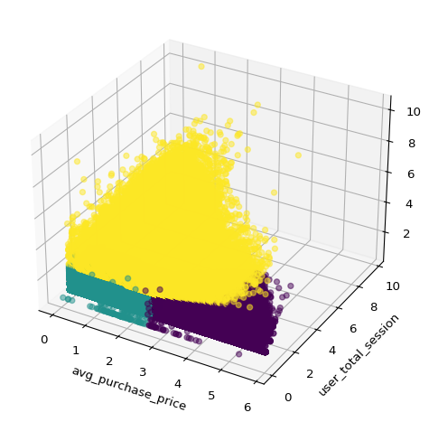
# Create a new DataFrame with the original data and the cluster labels
user_data = data[['price', 'product_id', 'user_id']].groupby('user_id').agg({'price': 'sum',
'product_id': 'count'}).reset_index()
# print(user_data)
user_data['behavior_type'] = KM.labels_
color_map = {0: 'Nieaktywny Wysokopoziomowy Użytkownik', 1: 'Nieaktywny Niskopoziomowy Użytkownik', 2: 'Aktywny Użytkownik'}
user_data['behavior_type'] = user_data['behavior_type'].map(color_map)
user_data.columns = ['user_id', 'price', 'product_id', 'behavior_type']
grouped_data = user_data.groupby('behavior_type')
analysis_df = grouped_data.agg({'price': 'sum',
'product_id': 'count',
'user_id': 'nunique'})
comparison_analysis(analysis_df)
# Usunięcie zmiennych dla zwolnienia pamięci
del analysis_df, grouped_data, color_map, KM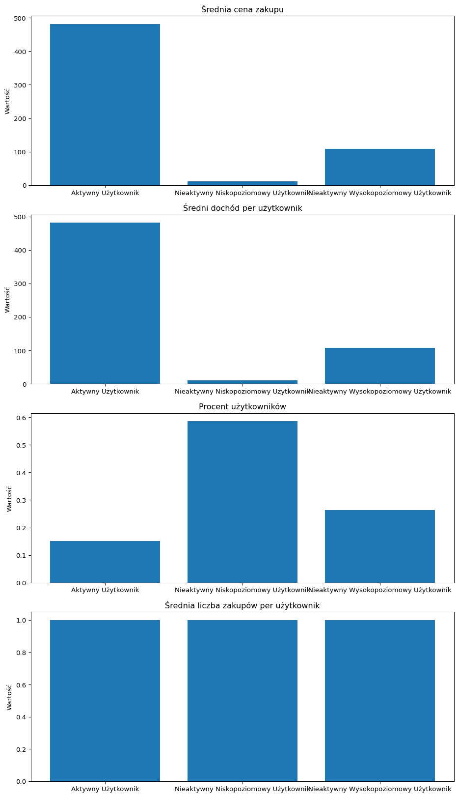
# Zmapowanie behavior_type do oryginalnych danych
data['behavior_type'] = data['user_id'].map(user_data.set_index('user_id')['behavior_type'])
behavior_types = user_data['behavior_type'].unique()
# Wykres i osie
fig, axs = plt.subplots(len(behavior_types), 2, figsize=(12, 20))
# Iteracja po typie zachowania
for i, behavior_type in enumerate(behavior_types):
behavior_data = data[data['behavior_type'] == behavior_type]
# Wykres dystrybucji typów zdarzeń z biegiem czasu (godzina dnia)
ax = axs[i, 0]
behavior_data.groupby(behavior_data['event_time'].dt.hour)['event_type'].value_counts().unstack().plot(kind='line', ax=ax)
ax.set_title(f'Dystrybucja typów zdarzeń z biegiem czasu - {behavior_type}')
ax.set_xlabel('Godzina dnia')
ax.set_ylabel('Częstotliwość')
ax.legend()
# Plot the event type distribution z biegiem czasu (dzień tygodnia)
ax = axs[i, 1]
behavior_data.groupby(behavior_data['event_time'].dt.weekday)['event_type'].value_counts().unstack().plot(kind='line', ax=ax)
ax.set_title(f'Dystrybucja typów zdarzeń z biegiem czasu - {behavior_type}')
ax.set_xlabel('Dzień tygodnia')
ax.set_ylabel('Częstotliwość')
ax.legend()
# Wyrównaj layout i wyświetl wykresy
plt.tight_layout()
plt.show()
# Usunięcie zmiennych dla zwolnienia pamięci
del behavior_types, behavior_data, fig, axs, i, behavior_type, user_data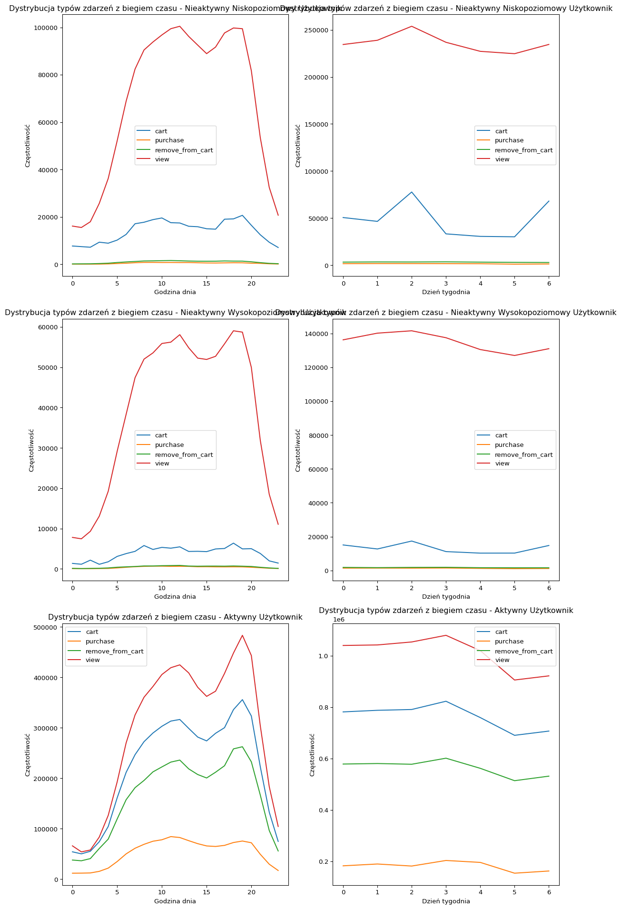
Analiza koszykowa
- Tworzę zbiór danych dla analizy koszykowej, usuwam wiersze, które nie zawierają zakupów
- Używam ‘brand’ zamiast ‘product_id’, ponieważ jest trudniej znaleźć reguły asocjacyjne
import pandas as pd
from sklearn.feature_extraction.text import CountVectorizer
def create_sparse_matrix(data, column):
# Grupowanie danych według 'user_id' i łączenie wartości w kolumnie w jeden ciąg znaków
grouped_data = data.groupby('user_id')[column].apply(lambda x: ' '.join(map(str, x)))
# Użycie CountVectorizer do przekształcenia danych w macierz rzadką
vectorizer = CountVectorizer(binary=True, dtype=bool)
sparse_matrix = vectorizer.fit_transform(grouped_data.astype(str))
# Konwersja macierzy rzadej do DataFrame
sparse_df = pd.DataFrame.sparse.from_spmatrix(sparse_matrix, columns=vectorizer.get_feature_names_out())
return sparse_df
# Filtrowanie i usuwanie wartości NaN
brand_basket_data = data[data['event_type'] == 'purchase'][['user_id', 'brand']].dropna()
brand_basket_data['brand'] = brand_basket_data['brand'].apply(lambda x: x.replace('.', '_')) # zastąpienie spacji podkreśleniem
print(brand_basket_data['brand'].value_counts().sort_values(ascending=False).head(10))
category_basket_data = data[data['event_type'] == 'purchase'][['user_id', 'category_id']].dropna()
# Macierz rzadka dla 'brand'
brand_sparse_df = create_sparse_matrix(brand_basket_data, 'brand')
# Macierz rzadka dla 'category_id'
category_sparse_df = create_sparse_matrix(category_basket_data, 'category_id')
# Usunięcie zmiennych dla zwolnienia pamięci
del brand_basket_data, category_basket_databrand
runail 111408
irisk 73806
masura 49751
grattol 49542
bpw_style 37943
ingarden 27411
estel 19438
uno 17586
freedecor 17467
italwax 17105
Name: count, dtype: int64- Wprowadzenie reguł asocjacyjnych przy użyciu algorytmu Apriori
from mlxtend.frequent_patterns import apriori, association_rules
import pandas as pd
import numpy as np
def generate_association_rules(data_df, type, min_support=0.025, min_confidence=0.7):
# Najczęstsze zestawy elementów
frequent_itemset = apriori(data_df, min_support=min_support, use_colnames=True)
# Zapisz częste zestawy elementów do CSV
frequent_itemset.to_csv('./{}_apriori.csv'.format(type), index=False)
# Generowanie reguł asocjacyjnych
association_rules_df = association_rules(frequent_itemset, metric="confidence", min_threshold=min_confidence)
# Zapisz reguły asocjacyjne do CSV
association_rules_df.to_csv('./{}_associationRules.csv'.format(type), index=False)
# Usunięcie zduplikowanych reguł
df1 = pd.DataFrame(np.sort(association_rules_df[['antecedents','consequents']], axis=1), index=association_rules_df.index)
association_rules_df = association_rules_df[~df1.duplicated()]
return association_rules_df
# Wywołanie funkcji z macierzą rzadką dla ID produktów
brand_association_rules = generate_association_rules(brand_sparse_df, 'brand', min_support=0.01, min_confidence=0.5)
category_association_rules = generate_association_rules(category_sparse_df, 'category_id', min_support=0.01, min_confidence=0.5)
# Usunięcie zmiennych dla zwolnienia pamięci
del brand_sparse_df, category_sparse_df- Wizualizacja Top 10 Reguł
def draw_graph(rules, rules_to_show):
import networkx as nx
import numpy as np
import matplotlib.pyplot as plt
G1 = nx.DiGraph()
color_map = []
N = 50
colors = np.random.rand(N)
strs = ['R0', 'R1', 'R2', 'R3', 'R4', 'R5', 'R6', 'R7', 'R8', 'R9', 'R10', 'R11']
for i in range(rules_to_show):
G1.add_nodes_from(["R" + str(i)])
for i in range(rules_to_show):
for a in rules.iloc[i]['antecedents']:
G1.add_nodes_from([a])
G1.add_edge(a, "R" + str(i), color=colors[i], weight=2)
for c in rules.iloc[i]['consequents']:
G1.add_nodes_from([c])
G1.add_edge("R" + str(i), c, color=colors[i], weight=2)
for node in G1:
found_a_string = False
for item in strs:
if node == item:
found_a_string = True
if found_a_string:
color_map.append('yellow')
else:
color_map.append('green')
edges = G1.edges()
colors = [G1[u][v]['color'] for u, v in edges]
weights = [G1[u][v]['weight'] for u, v in edges]
pos = nx.spring_layout(G1, k=16, scale=1)
nx.draw(G1, pos, node_color=color_map, edge_color=colors, width=weights, font_size=16, with_labels=False)
for p in pos: # raise text positions
pos[p][1] += 0.07
nx.draw_networkx_labels(G1, pos)
plt.show()
draw_graph(category_association_rules.sort_values(['support', 'confidence', 'lift'], ascending=[False, False, False]), 10)
draw_graph(brand_association_rules.sort_values(['support', 'confidence', 'lift'], ascending=[False, False, False]), 10)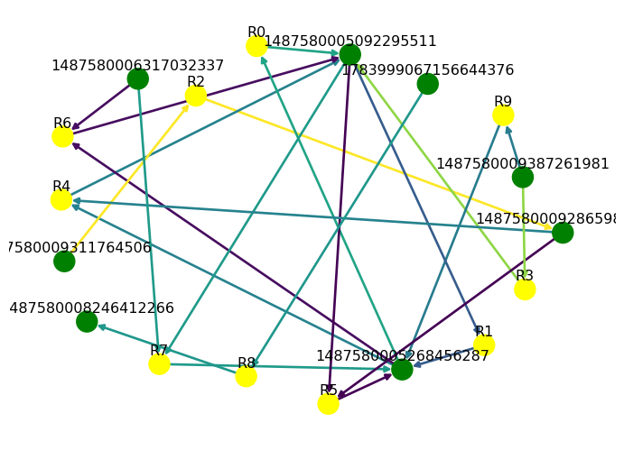
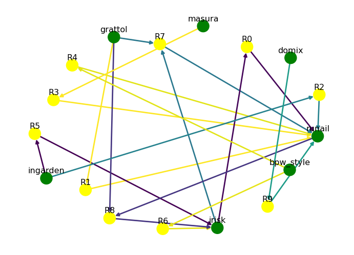